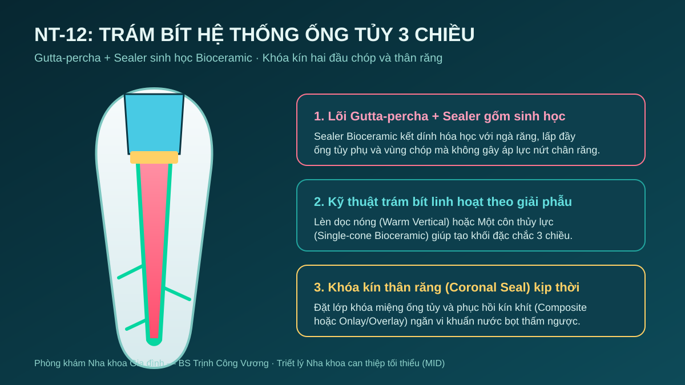

NT-12: Trám bít hệ thống ống tủy: Gutta-percha, sealer và kỹ thuật trám bít

Sau khi hệ thống ống tủy đã được tạo hình chuẩn xác và khử khuẩn sạch sẽ, mục tiêu của bước trám bít ống tủy (Root Canal Obturation) là bịt kín toàn bộ không gian ống tủy theo cả ba chiều không gian — từ lỗ chóp cho đến miệng ống tủy — nhằm "nhốt chặt" bất kỳ vi khuẩn siêu nhỏ nào còn sót lại và ngăn không cho dịch mô từ vùng chóp hay vi khuẩn từ khoang miệng xâm nhập trở lại.
1. Điều kiện trước khi trám bít: Đúng thời điểm mới kín khít
Không bao giờ được vội vàng trám bít ống tủy khi:
- Răng vẫn còn đau tự phát dữ dội hoặc đau nhói nhiều khi gõ.
- Ống tủy vẫn còn rỉ dịch viêm hoặc chảy máu không làm khô được bằng côn giấy (paper point).
- Chưa xác định rõ chiều dài làm việc và chưa kiểm soát khô sạch dưới đê cao su.
Khi răng đã hết triệu chứng cấp, ống tủy sạch và khô ráo hoàn toàn, đó là thời điểm vàng để trám bít.
2. Vật liệu trám bít: Gutta-percha và Sealer sinh học
- Côn Gutta-percha: Là vật liệu lõi (core material) kinh điển có tính trơ sinh học, không tan trong dịch mô, cản quang rõ trên X-quang và dễ dàng lấy bỏ nếu sau này cần nội nha lại. Tuy nhiên, Gutta-percha không tự dán dính vào thành ngà, nên luôn cần đi kèm chất gắn (sealer).
- Chất trám bít ống tủy (Sealer): Lấp đầy các khe hở vi thể giữa côn Gutta-percha và thành ngà, cũng như các ống tủy phụ.
- Sealer gốc nhựa Epoxy (như AH Plus): Có độ bền cơ học tốt, ít hòa tan và độ kín khít cao.
- Sealer gốm sinh học (Bioceramic / Calcium Silicate Sealer): Là bước tiến nổi bật của Nội nha hiện đại. Vật liệu này tương hợp sinh học tuyệt vời, có tính kiềm kháng khuẩn, sử dụng chính độ ẩm tự nhiên trong ống ngà để đông cứng và liên kết hóa học trực tiếp với ngà răng, rất thân thiện với mô quanh chóp.
3. Các kỹ thuật trám bít phổ biến
- Lèn ngang nguội (Cold Lateral Compaction): Kỹ thuật truyền thống dùng côn chính kết hợp cây lèn tay đặt thêm nhiều côn phụ. Đáng tin cậy nhưng tốn thời gian và nếu lèn quá mạnh có thể gây áp lực nứt chân răng.
- Lèn dọc nóng (Warm Vertical Compaction / Continuous Wave): Dùng thiết bị sinh nhiệt làm mềm Gutta-percha để nén chảy dẻo vào các ống tủy phụ, eo thắt và vùng chóp hình thái bất thường, tạo khối đồng nhất đặc chắc.
- Kỹ thuật một côn thủy lực với Sealer Bioceramic (Hydraulic Condensation / Single-Cone with Bioceramic Sealer): Khi ống tủy đã được tạo hình đồng bộ với côn Gutta-percha chuẩn kích thước và độ thuôn, sealer gốm sinh học đóng vai trò chủ lực làm kín ba chiều mà không cần dùng lực nén mạnh gây nguy cơ vi nứt ngà.
4. "Khóa chặt" hai đầu: Chóp kín và Thân răng kín (Coronal Seal)
Nhiều nghiên cứu kinh điển cho thấy: một ca trám bít ống tủy đẹp lung linh trên X-quang vẫn có thể thất bại nếu miếng trám hoặc mão phục hồi phía trên thân răng bị hở vi kẽ, khiến vi khuẩn từ nước bọt thấm ngược xuống ống tủy chỉ sau vài tuần. Vì vậy, ngay sau khi hoàn tất trám bít ống tủy, bác sĩ cần đặt ngay lớp khóa miệng ống tủy (Orifice Barrier) và lên kế hoạch phục hồi thân răng kín khít kịp thời (trám composite dán dính hoặc Onlay/Overlay bảo vệ múi răng).
Địa chỉ: Số 15 đường Võ Nguyên Giáp, phường Đức Xuân, tỉnh Thái Nguyên
Hotline & Zalo tư vấn trực tiếp: 0912 343 858 · Website: https://tcvuong6-wq.github.io/bsvuong-web/